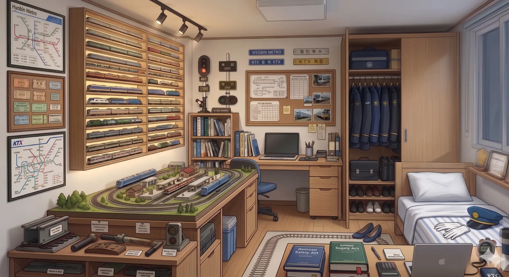
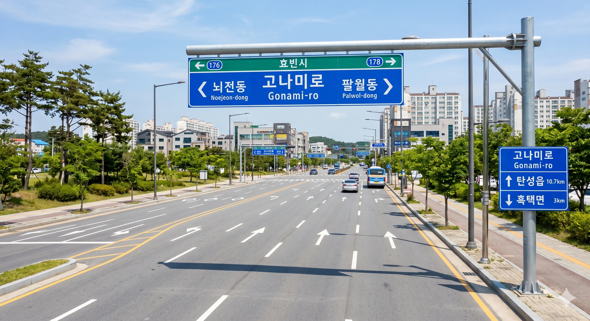
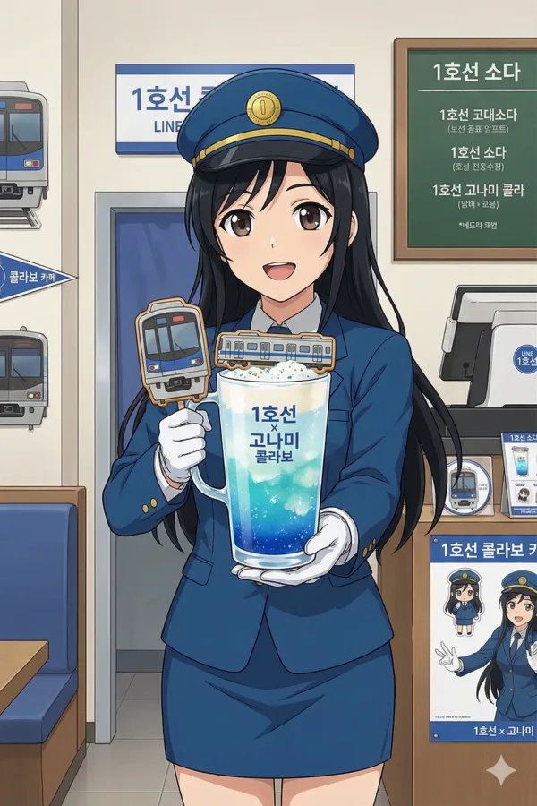
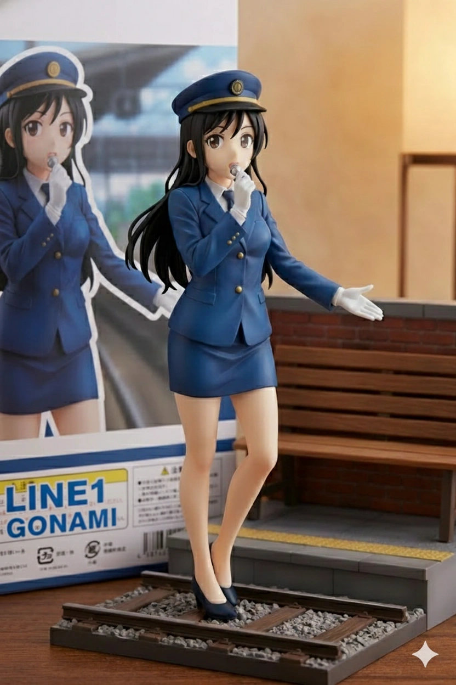
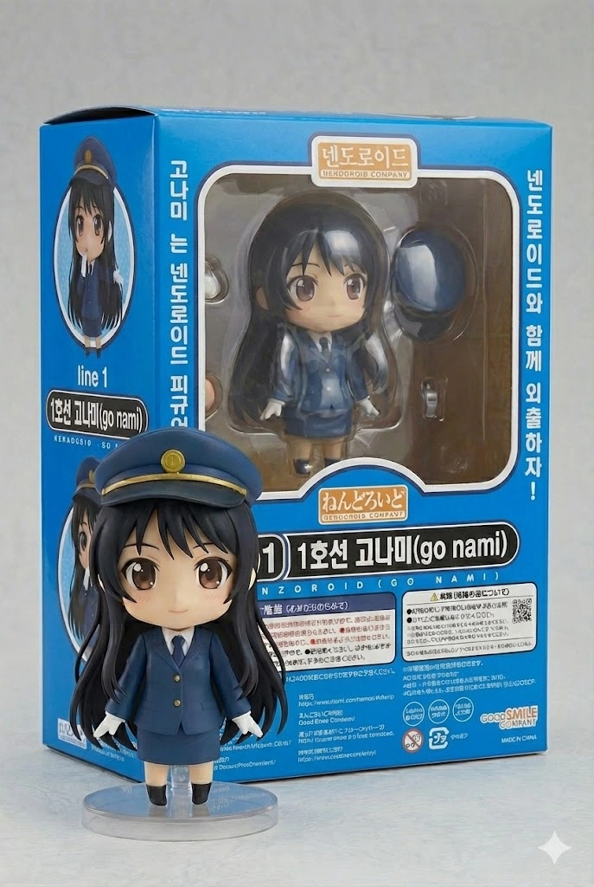

효빈교통공사 캐릭터들
| 등 장 인 물 |
1호선 | 2호선 | 3호선 | 4호선 | 5호선 | 창전선 |
|---|---|---|---|---|---|---|
 고나미 고나미 |
 하루빈 하루빈 |
 박라미 박라미 |
 다로나 다로나 |
 미소하 미소하 |
 심세이 심세이 |
|
| 6호선 | 7호선 | 8호선 | 빈효선* | |||
 라세나 라세나 |
 임세정 임세정 |
 임세하 임세하 |
 유리아 유리아 |
 전노아 전노아 |
||
|
* 빈효선: 노선 운영은 효빈교통공사가 아닌 코레일(한국철도공사)이 담당하지만, 지역 인프라 특성상 같이 묶여서 캐릭터 사업으로 진행됨. * 창전선 (본 문서 캐릭터 소속) 등 신규 노선은 개통 및 캐릭터 정식 데뷔 시점에 맞춰 틀에 추가될 예정입니다. (현재 심세이 정식 등재 완료) |
||||||
- 1. 개요
- 2. 상세 설정
- 2.1. 성격: FM과 성덕의 공존
- 2.2. 학업 및 업무 능력
- 2.3. 말투 및 유행어
- 2.4. 정치 성향
- 2.5. 외형 및 디자인
- 2.6. 성우 연기톤
- 3. 가족 관계 (숨 막히는 원칙주의 K-가정)
- 4. 인간 관계
- 5. 철덕 모먼트 및 사건 사고 (일화)
- 6. 여담 및 설정 비화
- 6.1. "타카사키 나미"의 진실 (성덕의 이중생활)
- 6.2. 기타 여담
- 7. 미디어 믹스 및 굿즈
1. 개요
"지금부터, 특별 교육입니다. (안전수칙 제154조부터 암송 실시.)" - 교육 모드 발동 시
효빈권 광역전철 1호선을 상징하는 마스코트 캐릭터이자, 효빈교통공사 캐릭터 유니버스의 명실상부한 군기반장이자 맏언니. 캐릭터 설정상 나이는 만 26세 (1999년생)이며, 생일인 12월 2일은 실제 효빈 도시철도 1호선의 최초 개통일(1984년)에서 따왔다.
직업은 1호선 전동차를 운전하는 기관사이며, 뛰어난 실력을 인정받아 젊은 나이에 대리급 대우를 받고 있다. 평소에는 과묵하고 깐깐한 원칙주의자(FM) 리더로 통하지만, 그 실체는 숨길 수 없는 광기의 SSS급 철도 동호인(성덕)이다. 사원증을 목에 건 순간의 냉철한 '정색 모드'와, 퇴근 후 카메라를 들었을 때의 뜨거운 '폭주 모드'의 대비가 극심한 것이 가장 큰 매력 포인트. 본인은 철저하게 일코(일반인 코스프레)를 하고 있다고 굳게 믿고 있으나, 안타깝게도 이미 본사 사장님부터 말단 청소부 여사님까지 전사적으로 다 들킨 지 오래다.(...)
2. 상세 설정

2.1. 성격: FM과 성덕의 공존
표면적으로는 숨 막히는 완벽주의자이자 프로 의식으로 똘똘 뭉친 엘리트다. 출근 전 유니폼의 주름을 칼같이 세우는 것은 기본이요, 열차 시각표와 안전 수칙을 마치 성경처럼 달달 외우고 다닌다. 후배들에게도 극도로 엄격하여 "규정은 선배들의 피로 쓰였다."는 섬뜩한 명언을 입에 달고 산다. 대기실 분위기가 조금이라도 해이해지면 특유의 단문형 말투("안 돼.", "규정대로 해.", "확인해.")로 상황을 일격에 정리해버린다. 특히 심기가 불편할 땐 성우급 저음으로 "녹음실 경고"를 날려 상대를 얼어붙게 만드는데, 이때 나오는 목소리가 하도 고급스러워서 일부러 혼나러 가는 하루빈 같은 미친 후배도 존재한다.
하지만 이 모든 카리스마는 새로운 전동차 앞에서는 무용지물이 된다. 그녀의 본모습은 통제 불능의 하드코어 철도 덕후. 신형 전동차의 갑종회송(반입) 정보가 뜨거나 드문 희귀 편성을 목격하면 눈빛이 0.3초 만에 맹수를 방불케 하는 '사냥개 모드'로 돌변한다. 전동차 구동음(VVVF), 도어 개폐음, 심지어 역내 안내방송 멘트의 미세한 업데이트 내역까지 편집증적으로 집착하며 고음질 마이크로 녹음하고 다닌다. 정색하고 후배를 혼내다가도, 창밖으로 신형 KTX-이음이 지나가면 시선이 그쪽으로 고정되며 말이 빨라지는 갭 모에가 일품.
2.2. 학업 및 업무 능력
'덕업일치'를 완벽하게 이룬 엘리트. 문과의 암기력과 이과의 공간지각능력을 모두 갖춘 사기캐다.
| 구분 | 상세 내용 |
|---|---|
| 학업 성향 |
인문/사회 강세 + 운전 적성(물리)
국어 1~2등급
사회 1~2등급
수학 1~2등급
과학 2~3등급
종합 내신 1.8~2.3 (탐구형+규칙형) |
| 업무 역량 |
매뉴얼 독해 및 암기 능력 최상(SSS급). 돌발 상황 발생 시 위기 대응 능력이 침착함을 넘어선 수준으로, 팀의 든든한 '안전 기준점' 역할을 단단히 한다. |
| 덕력 (철도 한정) |
인간계 최강. 탈인간급 센서 탑재. 지하철 소음 속에서도 구동음만 듣고 모터의 제조사와 연식을 감별해낸다. 승강장 진입음 0.5초만 듣고도 "어? 이거 114편성이네." 하고 맞추는 기행을 일삼는다. |
효빈동여자고등학교 시절부터 사회 탐구 영역에서 전국구급 두각을 나타냈으며, 이때 다져진 암기력은 현재 방대한 양의 철도안전법과 운전 규정을 통째로 머릿속에 집어넣는 사기적인 스펙의 기반이 되었다. 엄청난 덕심을 추진력 삼아 효빈대학교 교통대학 철도운전시스템공학과를 수석으로 박살 내고 졸업했다.
2.3. 말투 및 유행어
- 기본 톤 (업무 모드): 감정이 거세된 단문형, 결론 위주. ("안 돼.", "메뉴얼 3장 2항 위반이야.", "규정대로 처리해.", "확인.")
- 교육 모드: "지금부터, 특별 교육입니다." (주로 하루빈이 사고를 치거나 뺀질거릴 때 발동한다. 이 대사가 나오는 순간 대기실의 온도가 5도쯤 내려가며 후배들은 숨을 참는다.)
- 덕질 모드 (폭주): 눈동자가 커지며 말이 3배속으로 빨라지고 톤이 하이솔(Sol)까지 올라간다. ("잠깐, 방금 이 구동음! 미쓰비시 GTO 초기형 인버터 소리인데 이게 왜 지금 여기서 들리는 거지?! 104편성은 어제 기지 입고됐을 텐데?!")
- 안내방송 톤: 성우 세토 아사미 / 박지윤 특유의 기품 있고 차분한 톤. 꾸벅꾸벅 졸던 승객들도 이 목소리를 들으면 본능적으로 척추를 세우고 자세를 고쳐 앉게 만드는 마력을 지녔다.
2.4. 정치 성향
對 윤대환 (전 시장): 경멸을 넘어선 혐오.
안전을 종교이자 신앙처럼 여기는 기관사로서, 과거 윤대환 전 시장이 저지른 보여주기식 행정과 막가파식 안전 예산 삭감, 그리고 가장 뼈아픈 5호선 공사 중단 사태 등을 '철도에 대한 중대 범죄'로 규정하고 극도로 혐오한다. 휴게실 TV에서 윤대환 이야기만 나와도 들고 있던 커피잔이 흔들릴 정도로 빡쳐하며, 표정이 영하 20도 급으로 차가워진다.
對 박효빈 (현 시장): 절대적 신뢰 및 팬심.
고나미의 '최애 정치인'이자 열렬한 지지자. 박효빈 시장 취임 이후 추진된 노후 전동차 전면 교체 사업과 기관사 안전 인력 충원 등을 현장에서 직접 체감했기 때문이다. 사석에서는 박효빈 시장을 "참된 리더", "철도와 현장을 아는 분"이라고 열띠게 칭송하며, 거의 사생팬 수준의 맹목적인 충성심을 보인다. 선거철만 되면 주변 동료들에게 은근슬쩍 기호 1번 지지를 강요(?)하는 무서운 모습도 보인다.
2.5. 외형 및 디자인
풍성하게 내려오는 흑발의 긴 생머리를 지녔다. 살짝 웨이브가 들어간 머리끝과 단정하게 정돈된 앞머리가 특징으로, 청순파 미소녀의 정석을 보여준다. 눈은 크고 동그란 갈색 눈인데, 차분하고 어른스러워 보이는 흑발과 대비되어 오히려 호기심 많고 똘망똘망한 인상을 준다. 물론 신형 전동차 구동음을 들었을 때 한정으로 맹수의 눈빛으로 돌변한다 카더라.
복장은 1호선의 상징색인 파란색(#0077DD)을 베이스로 한 깔끔한 승무원 제복 핏이 돋보인다. 금장 단추가 포인트인 푸른색 재킷과 H라인 미니스커트, 정갈한 넥타이와 흰색 장갑의 조합이 완벽한 철도원의 모습을 구현하고 실재한다. 머리에 쓴 승무원 모자와 마이크를 쥐고 있는 모습 덕분에 당장이라도 역내 안내방송을 할 것 같은 프로페셔널함도 느껴지는 것도 포인트. 치마 길이가 비상 대피 시 활동하기 불편해 보인다는 FM적인 태클이 들어올 법도 하지만 예쁘면 장땡이다.
단정하고 엘리트 같은 외모와 다르게, 마이크를 쥐고 무언가 열심히 설명하려는 듯한 역동적인 포즈와 동그랗게 뜬 눈에서는 은근한 맹함 내지는 4차원 속성이 엿보이는 것이 갭 모에 요소 중 하나. 마치 파란색 혜성 베이스 기타를 치는 하나조노 타에처럼 엉뚱한 마이페이스로 주변을 휘어잡는 매력이 돋보인다. 다른 효빈교통공사 마스코트 멤버들이 각자의 톡톡 튀는 개성을 뽐낼 때, 고나미는 가장 '기본에 충실한 철도 마스코트'이면서도 은은하게 뿜어져 나오는 백치미(...)로 귀여움을 어필하는 포지션이다.
 사복 (휴일 모드)
사복 (휴일 모드)
포근한 니트 가디건과 청치마 조합. 주로 휴일에 철도 모형점이나 지방 노선 순례를 갈 때 입는 편안한 복장이다.
 일일 메이드 카페 이벤트
일일 메이드 카페 이벤트
사내 이벤트 당시 벌칙(?)으로 입었던 복장. 정작 본인은 안내방송 톤으로 "주인님, 승차를 환영합니다"를 시전해 레전드를 찍었다.
2.6. 목소리 및 성우 연기
기본적인 목소리는 차분하고 지적인 저음의 아나운서 톤이다. 열차 내 안내방송을 할 때나 후배들을 갈굴 지도할 때는 극도로 감정이 절제된 톤을 유지하지만, 전동차 구동음이나 철도 관련 이야기가 나오면 텐션이 수직 상승하며 말이 3배속으로 빨라지는 완벽한 갭 모에 연기가 특징이다. 한일 양국 성우 모두 이 'FM 모드'와 '철덕 폭주 모드'의 스위치 전환을 완벽하게 소화해 냈다.
-
한국판 (CV. 박지윤)
한국판 담당 성우인 박지윤은 주로 디즈니 애니메이션의 안나(겨울왕국)나 라푼젤 같이 발랄하고 에너지 넘치는 공주님, 혹은 쾌활한 소녀 연기로 대중에게 매우 친숙하다. 하지만 고나미 연기에서는 그 특유의 하이톤을 쫙 빼고, 극도로 차분하고 위엄 있는 사관학교 교관 톤을 구사한다. 때문에 평소 박지윤 성우의 연기만 알던 팬들은 엔딩 크레딧을 보고 "이게 안나라고?!" 라며 경악하는 경우가 많다.눈사람 만들래? (X) 매뉴얼 외울래? (O)
물론 고나미가 철덕 모드로 폭주하여 신형 모터 찬양을 늘어놓을 때는, 안나 시절의 그 통통 튀고 산만한(?) 텐션이 튀어나오며 기가 막힌 싱크로율을 보여준다. -
일본판 (CV. 세토 아사미)
일본판 담당 성우인 세토 아사미는 '청춘 돼지 시리즈'의 사쿠라지마 마이나 '주술회전'의 쿠기사키 노바라 등, 쿨뷰티 계열이나 기가 센 누님 연기의 1인자로 꼽힌다. 고나미의 깐깐한 'FM 마녀' 속성과 세토 아사미 특유의 나긋나긋하면서도 서늘한 저음이 그야말로 찰떡궁합을 자랑한다. 하루빈에게 내리는 "특별 교육입니다" 대사는 묘하게 마이 선배에게 짓밟히는(?) 포상을 연상케 하여 일부 변태 팬덤을 양산했다.
반대로 희귀 열차를 보고 흥분할 때는 '치하야후루'의 아야세 치하야가 카루타 삼매경에 빠졌을 때 내는 그 맹목적이고 광기 어린 하이톤으로 돌변해 성우 장난의 진수를 보여준다.
2.7. 작중 행적
본편 애니메이션인 《철도부! - 애프터 스쿨 미라클 -》을 비롯하여 철덕일기, 레일루미네 등 각종 미디어 믹스에서 고나미가 남긴 'FM 마녀'이자 '인간계 최강 철덕'으로서의 행적을 다루는 문단. "규정은 피로 쓰였다"며 후배들을 갈구다가도, 희귀한 전동차 구동음만 들리면 이성을 잃고 쇳덩어리에 얼굴을 비비며 폭풍 오열하는 극강의 갭 모에(광기) 역사를 모두 확인할 수 있다.
3. 가족 관계 (숨 막히는 원칙주의 K-가정)

효빈교통공사 내에서도 고나미의 흔들림 없는 원칙주의와 고급스러운 안내방송 목소리의 출처는 늘 미스터리였다. 하지만 그녀의 본가(중구 오석동)를 방문해 본 동료들은 그 숨 막히는 가족 구성원들의 면면을 보고 단번에 고개를 끄덕였다고 한다. 집안 분위기는 거의 '철도청 사관학교'에 가깝다.
👨 아버지: 고강철 (高鋼鐵, Ko Gang-cheol)
나이: 58세 (1968년생 / 생일: 9월 18일)
신장: 178cm
출신지: 덕빈남도 낙주시
학력/경력: 한국철도대학 / 전직 코레일 소속 차량 검수원
"걸어 다니는 철도안전법, 고나미의 깐깐한 FM 성격의 원흉(?)"
- 이름부터가 이미 철도에 뼈를 묻을 운명인 강철(鋼鐵)이다. 거실 벽시계를 매일 아침 코레일 타임서버와 0.1초 오차 없이 동기화한다.
- 고나미에게 "규정은 선배들의 피로 쓰였다"는 명언을 새겨준 장본인. 명절 윷놀이 대신 친척들을 모아놓고 '철도 수신호 배틀'을 시전한다.
취미: 퇴근하는 딸내미 열차 운행 일지 불시 검문.
👩 어머니: 이정음 (李正音, Lee Jeong-eum)
나이: 55세 (1971년생 / 생일: 10월 9일)
신장: 165cm
출신지: 덕빈북도 천주시 천성구
학력/경력: 천주대학교 국어교육과 / 전직 효빈시 관내 국어 교사
"고나미 특유의 '성우 톤 안내방송'을 완성시킨 조기 교육의 달인"
- 이름의 유래는 놀랍게도 훈민정음의 정음(正音). 집안에서 은어, 비속어, 잘못된 띄어쓰기 및 장단음 사용 시 즉각 디렉팅이 들어간다.
- 고나미가 만취해서 안내방송 주정을 부리면 혼내기는커녕 "취한 와중에도 치조음 발음이 정확하구나"라며 칭찬한다.
화날 때 제일 무서운 분. 화를 내지 않고 조곤조곤 문법을 지적하며 뼈를 때리신다.
👦 남동생: 고나루 (Ko Naru)
나이: 21세 (2005년생 / 생일: 5월 5일)
신장: 176cm
출신지: 효빈광역시 중구 오석동
학력/경력: 효빈대학교 인문대학 재학 / 심야 취객 수송 구원열차
"숨 막히는 FM 사관학교 집안의 유일한 민간인이자 영원한 샌드백"
- 매일 아침 6시 철도 건널목 경보음 알람에 맞춰 기상해야 하는 형벌을 받고 있는 평범한 문과생.
- 본인은 철덕을 극혐하지만, 어깨너머로 배운 서당개 3년 차라 길가다 듣는 전동차 구동음만으로 모터 연식을 맞추는 기염을 토해 스스로 절망한다.
장래 희망: 철도랑 전혀 상관없는 직장 취업해서 자취방 구하고 조용히 독립하기.
4. 인간 관계
공사 내부에서는 철저하게 직급과 선후배 호칭을 지키지만, 학생 나이대의 어린 캐릭터들에게는 이름을 부르거나 '~학생'이라고 칭하며 묘하게 부드러워진다.
-
하루빈 (2호선): 직속 대학 후배이자 영원한 애증의 관계. 허구한 날 뺀질거리고 틈만 나면 땡땡이를 치려는 하루빈을 "특별 교육"이라는 명목하에 참교육하는 게 고나미의 주요 일과다.
※ 비하인드: 하루빈이 고나미의 빡친 안내방송(?)이나 지적하는 목소리 파일을 몰래 'ASMR 폴더'에 저장해두고, 수면 장애가 올 때나 멘탈이 흔들릴 때 듣는다는 충격적인 소문이 있다.이쯤 되면 그냥 마조히스트다.고나미는 이 변태적인 행각을 알고서도 모른 척하는 건지, 진짜 눈치를 못 챈 건지 불분명하지만... 최근 "발음 교정을 위한 참고 자료라면 저장은 허가한다."며 귀끝을 붉히며 츤츤거린 적이 있다. - 임세하 (7호선): '진성 기계/철도 덕후'로서 서로 영혼이 통하는 유일한 사이. 임세하가 대학 시절 "신형 모터 배선도 구경하느라 전공 수업 째고 F학점 받았다"고 고백했을 때, 다른 동기들은 미쳤다며 비웃었지만 오직 고나미만이 어깨를 쓰다듬으며 "그 마음 십분 이해한다. 모터의 구동 계통은 학점 따위보다 중대한 사안이지."라며 진지하게 쉴드쳐준 전설적인 일화가 있다. 둘이 휴게실에서 만나면 "구형 저항제어 차량이 주는 거친 낭만과 회생제동의 효율성"에 대해 3시간 동안 외계어로 토론한다.
- 유리아 (8호선): 통제 불능의 호기심 덩어리 막내. 유리아가 호기심을 못 이겨 '비상 정지' 버튼으로 손을 뻗기 0.1초 전에 귀신같이 나타나 뒷덜미를 낚아채는 공식 보호자 역할이다. 엄하게 혼내다가도, 유리아가 "선배님 저 오늘 매뉴얼 3장 다 외웠어요!"라며 칭찬을 갈구하는 강아지 눈빛을 쏘면 한숨을 쉬면서도 입꼬리가 씰룩거리는 걸 막지 못한다.
- 효빈대 카르텔: 하루빈(운영), 미소하(복지), 임세하(기계)와 함께 사내 최대 학연 파벌인 이른바 '효빈대 라인'의 실질적인 정점에 서 있다. 본인 입으로는 절대 학연을 따지지 않고 실력만 본다고 엄포를 놓지만, 막상 효빈대 후배들이 사고를 치면 타 대학 출신들보다 미세하게(한 0.1% 정도?) 서류 결재를 덜 반려한다는 의혹을 받고 대기실 분위기가 싸해진다.
5. 철덕 모먼트 및 사건 사고 (일화)
🚨 곽암해수욕장역 지하기지 침투 사건 (vs 유리아)
8호선이 개통된 지 얼마 지나지 않아 자체 차량기지가 없던 시절, 1호선의 곽산차량기지(곽암해수욕장역 내부)를 더부살이로 공용 사용하던 때 터진 대형 사고 미수 사건. 실습을 핑계로 차량기지에 온 8호선 마스코트 유리아가 구석에 보존된 1호선 초창기(1984년식) 아날로그 릴레이 계전기 제어반을 발견하고 흥분해 스패너를 꺼내 덮개를 풀기 시작했다.
유리아가 "야바이!! 이 아날로그 접점 소리 스고이!!"를 외치던 찰나, 뒤에서 영하 20도의 한기를 내뿜는 고나미가 나타났다. "안 돼. 규정 위반이야. 외부인 통제 구역 장비 무단 훼손. 지금부터, 특별 교육입니다." 유리아는 반사적으로 엎드려 "고멘나사이!!"를 외치면서도 눈치 없이 "근데 선배님... 아까 조였더니 노이즈 잡혀서 물리적 접점 소리가 진짜 예술이던데..."라고 덕후 발언을 해버렸다.
순간 고나미의 '하드코어 철덕' 스위치가 눌려버렸다. 고나미는 당황하며 황급히 유리아를 쫓아냈지만, 혼자 남아 유리아가 조여놓은 릴레이 스위치를 작동시켜 보고는 그 완벽한 타격음을 고음질 마이크로 몰래 녹음하여 'Project V' 폴더에 저장했다는 전설이 1호선 기관사들 사이에 내려오고 있다.
🔊 삼겹살과 GTO 인버터 사건
부서 회식 자리에서 불판에 삼겹살이 올라가고 치이익- 고기 굽는 소리가 나던 평화로운 순간. 갑자기 고나미가 젓가락을 탁 내려놓으며 "어? 잠깐. 이 소리, 미쓰비시 GTO 초기형 인버터(VVVF) 구동음이랑 주파수 대역이 완벽하게 똑같은데?"라고 발언해 왁자지껄하던 고깃집 분위기를 일순간에 빙하기로 만들어버렸다.
심지어 헛소리가 아님을 증명하겠다며 스마트폰 주파수 튜너 앱을 켜서 데시벨과 파장을 기어이 측정해 내고야 말았다. 그걸 왜 증명해 미친 사람아 그 참사 이후로 승무본부 회식 때 고나미 테이블 앞에서는 그 누구도 감히 고기를 굽지 않는 암묵적인 룰이 생겼다.
📁 금지된 심연의 폴더 'Project V'
그녀의 개인 업무용 노트북 바탕화면 구석에는 'Project V'라는 수상한 이름의 3중 암호화 폴더가 존재한다. 룸메이트였던 라세나가 우연히 비밀번호가 풀린 틈을 타 몰래 열어보았는데, 회사 기밀 문서나 사생활(야동) 같은 정상적인(?) 일탈이 아니라 전 세계 전동차의 구동음(VVVF)과 안내방송을 무손실 음원(FLAC)으로 직행 녹음하여 제조사/연식/노선별로 징그럽게 분류해 놓은 소리 폴더였다.
파일명이 [극락] 도시바_IGBT_가속음_도어엔진변주_고음질.wav, [눈물] 1호선_구형저항_마지막퇴역_제동음.mp3 같은 식이었다고 라세나는 질린 표정으로 증언했다.
🍺 공포의 주사: 인간 자동안내방송기
평소에는 술자리를 칼같이 피하지만, 어쩌다 회식에서 한계치 이상을 마셔 만취하게 되면 평소의 깐깐한 냉철함은 온데간데없이 사라지고 '인간 안내방송 시스템' 모드가 강제 부팅된다.
회식 후 택시 뒷좌석에 타면 기사님을 향해 "출입문 닫습니다. 발빠짐에 주의하시기 바랍니다. 췻-" 하고 문 닫히는 공기압 소리까지 입으로 내고, 본인 집 앞에 도착해서 하차할 때는 "이번 역은 우리 집, 우리 집 역입니다. 내리실 문은... 오른쪽입니다. 삐- 삐- 삐-" 라며 경고음까지 완벽하게 모사하며 진상을 부린다. 더 소름 돋는 건 혈중알코올농도가 치솟은 상태에서도 그 발음과 성우 톤의 피치(Pitch)가 평소와 0.1%의 오차도 없이 완벽하다는 점이다.
💘 "그냥... 너무 예뻐서..."
임세하와 중정비를 마친 차량기지를 견학 갔을 때의 일이다. 기름때가 잔뜩 묻어있는 시커먼 대차(Bogie, 전동차 바퀴 틀)를 물끄러미 바라보던 고나미는 갑자기 뺨을 붉게 붉히더니 홀린 듯이 손을 뻗었다.
그리고는 "아름답지 않아? 하중을 견뎌내는 이 완벽한 강철의 곡선..."이라며 기름 떡진 고철 덩어리를 소중한 아기 다루듯 쓰다듬었다. 웬만한 기계공학 덕후인 임세하마저 그 끈적한 눈빛에 기겁하며 "언니, 그건 좀 병이야..."라며 뒷걸음질 쳤다는 전설적인 후문. 그녀에게 있어 기름 냄새 나는 정비창과 잘 닦인 철도 차량은 아이돌 콘서트장 1열보다 황홀하고 눈부신 성지다.
6. 여담 및 설정 비화
6.1. [설정 비화] "타카사키 나미"의 진실 (성덕의 이중생활)
"아, 타카사키 나미요? 그거 그냥 효빈메트로 일본 수출용 로컬라이징 이름입니다만. ...왜 제 눈을 피하시죠?" (동공 지진이 일어난 고나미)
완벽한 한국인임에도 불구하고 프로필에 일본명(타카사키 나미, 高崎娜美)이 당당하게 배정되어 있는 이유. 공식적으로는 효빈메트로 캐릭터 사업의 '해외 진출용 로컬라이징'이지만, 사실 철덕들 사이에서는 공공연한 비밀이 하나 있다. 본격 강제 창씨개명
'타카사키 나미'라는 이름은 원래 고나미가 대학 시절 일본으로 '철도 순례 원정'을 다닐 때, 그리고 일본 철도 오타쿠 커뮤니티(2ch, 5ch 철도판 등)에서 활동할 때 쓰던 비밀 닉네임(부캐)이었다는 것! 이름의 유래도 본인의 성씨인 '고(高)'와 일본의 유명한 철도 노선인 '다카사키선(高崎線)'을 교묘하게 합친 전형적인 철덕식 작명이다. 이름부터가 훌륭한 혼모노다.
이 흑역사(?)를 회사 홍보팀에서 우연히 알게 되었고, 캐릭터 사업을 기획할 때 홍보팀 직원이 "어차피 일본 진출도 할 건데, 고 대리님이 평소 쓰시던 그 일본 이름 쓰죠? 찰떡이던데."라며 본인의 허락도 없이 공식 설정으로 박아버렸다. 결국 고나미는 자신의 심연 깊은 곳에 봉인해 두었던 철덕 부캐가 전 세계에 강제 공개되는 수치심을 겪어야 했고, 지금도 누가 "타카사키 상!" 하고 부르면 반사적으로 귀끝이 새빨개지며 "고나미 기관사라고 부르십시오."라며 정색한다. 하지만 이미 트위터(X) 뒷계정 아이디는 그대로라고 한다.
6.2. 기타 여담
-
철도 순례의 광기: 휴가철이 되면 동료들은 제주도나 하와이를 갈 때, 그녀는 지방 노선이나 일본(특히 도쿄나 오사카)으로 나 홀로 '철도 순례 원정'을 떠난다. 유명 관광지나 맛집은 1도 관심 없고, 아침부터 막차 끊길 때까지 지하철과 전철만 주야장천 갈아타거나 승강장에 서서 역 멜로디(발차음)를 수집하러 다닌다. 자취방에 JR 계열사별 제복 컬렉션과 수백만 원짜리 철도 모형 디오라마가 방 하나를 통째로 점령하고 있다는 괴담이 있었으나, 최근 인스타그램 실수로 인해 팩트로 확인되었다.
방 하나가 아니라 집 전체가 박물관이라는 소문도 있다.
인스타그램 실수로 유출된 고나미의 실제 자취방 전경.이게 방이야 철도 박물관이야... -
시장님 바라기: 자신의 최애인 박효빈 시장이 1호선 현장 시찰이라도 나오는 날엔 본부장보다 먼저 달려나가 영접(?)한다. 시찰 동선과 일정을 사전에 몰래 빼내어 해당 구간의 운전 승무를 자원해서라도 배정받으며, 전날 밤 유니폼을 무려 3번이나 다림질하여 각을 세운다고 한다.
이 정도면 지지자가 아니라 종교다.성덕이 된 시장님과 성덕인 마스코트의 기묘한 조합 -
엄격한 디렉팅: 하루빈이 장난칠 때 고나미 특유의 깐깐한 목소리를 성대모사하며 놀리곤 하는데, 우연히 뒤에서 듣고 걸려도 혼내기는커녕 "방금 그 부분, 발성과 복식호흡이 부정확해. 아나운싱의 기본이 안 되어 있군. 다시 해봐."라며 오히려 정색하고 디렉팅을 봐줘서 하루빈을 당황하게 만든다.
하루빈: "아니 언니, 화를 내라고..." -
[신규] 독보적인 슬렌더 라인의 수호자: 최근 효빈광역시 홍보용으로 유출된(?) 해변 휴가 사진에서 고나미의 실제 체형이 드러나며 큰 화제가 되었다. 2호선 하루빈이나 7호선 임세하가 압도적인 볼륨감을 뽐낼 때, 고나미는 B77 - W60 - H80이라는 경이로운 슬렌더 수치를 기록하며 **'가녀린 청순미의 정석'**으로 추앙받게 되었다.
빈유는 스테이터스다.1호선의 파란색(#0077DD) 수영복이 흘러내릴 듯 위태로운 얇은 허리 라인이 포인트. 이 때문에 팬들 사이에서는 "하루빈이 2호선의 묵직함을 상징한다면, 고나미는 1호선의 날렵함을 상징한다"는 억지 고증(?)이 돌고 있다. 팬덤을 뒤집어놓은 전설의 해변 휴가 샷.
팬덤을 뒤집어놓은 전설의 해변 휴가 샷.
가녀린 슬렌더 핏의 진수를 보여준다. -
[밈] 타에와 다이아의 혼종?: 고나미의 비주얼이 공개된 후, 서브컬처 팬덤 사이에서는 기묘한 데자뷰가 일었다. 가슴까지 내려오는 풍성한 흑발 생머리와 파란색(#0077DD)을 상징색으로 쓰는 모습, 그리고 무언가에 꽂히면 발산하는 4차원적인 눈빛이 뱅드림(BanG Dream!)의 파란색 기타리스트 '하나조노 타에'와 판박이였기 때문이다. 반면, '숨 막히는 FM 성격'이면서도 뒤로는 '중증 하드코어 덕후'라는 이중생활 설정은 러브라이브! 선샤인!!의 학생회장 '쿠로사와 다이아'와 소름 돋는 평행이론을 형성했다. 결국 팬들 사이에서는 "얼굴은 오타에인데 입을 열면 다이아가 튀어나온다"는 밈이 정착되었고, 2차 창작에서는 파란 기타를 치며 전동차 구동음을 흉내 내거나(...) 후배들에게 "뿟부데스와!"를 외치며 특별 교육을 시전하는 기괴한 혼종으로 그려지곤 한다.
사실 원조 FM 군기반장인 소노다 우미의 냄새도 짙게 난다.
6.3. [도로/밈] 1호선 알박기 집착의 결정체, '고나미로'

효빈광역시 안천구 뇌전동 에서 시작하여 탄성군 탄성읍 공리까지 이어주는 총 연장 5,517m의 외곽 간선도로 고나미로(高娜美路, Gonami-ro)는 철덕들과 위키러들 사이에서 '성덕 기관사의 살벌한 집착이 투영된 결정체'이자 성지로 추앙받는 도로다. 본래 이 도로의 명칭은 '안천탄성로'였으나, 도시 외곽과 군 지역을 가로지르는 뻥 뚫린 선형을 자랑하다 보니 정작 마스코트 본인의 소속 노선인 1호선 관련 인프라가 전혀 없을 뻔했다가... 1호선의 끈을 절대 놓지 않는 광기의 집착을 보여주며 남구청 행정 직원들을 압박해 도로명 개편을 단행, 마스코트 데뷔에 맞춰 공식 명칭으로 개명되었다.
하지만 이 명예로운 도로명 뒤에는 철도 동호인들을 경악하게 만든 치명적인 개그 요소이자 완벽한 네이밍 고증이 숨어 있다. 명색이 [1호선](url?id=12) 간판 마스코트의 이름을 딴 도로임에도 불구하고, 정작 고나미로 연선에는 1호선 전철역이 단 하나도 존재하지 않는다(...). 옆 동네 전노아로와는 격이 다른 진정한 희망고문 시리즈 4탄. 5.5km 내내 2~ [5호선](http://127.0.0.1:5501/5%ED%98%B8%EC%84%A0.html) 인프라 중심지(도변읍, 흑택면 등)만 골라 무단 점거하며 스쳐 지나가는 기묘한 노선을 보여주는데, 철덕들의 무릎을 탁 치게 만든 최고의 네이밀 고증은 바로 도로 종점인 탄성읍 공리 경계에 1호선 탄성지선 의 탄성군청역 이 기가 막히게 딱 걸쳐 있다는 것! 팬덤에서는 "타 노선의 영지에 침범 [하면](http://127.0.0.1:5501/%EC%A0%84%EC%82%B0%EC%8B%9C.html#%ED%95%98%EB%A9%B4) 서도 최애 노선인 [1호선](http://127.0.0.1:5501/1%ED%98%B8%EC%84%A0.html) 의 끈을 절대 놓지 않는 FM 마녀의 살벌한 집착이 반영된 알박기 선형"이라며 경악을 금치 못하고 있다.
재미있는 점은 도로의 무지막지한 스펙이다. 타 대도로들에 비해 왕복 차로수가 미세하게 날렵하게 빠진 편인데, 위키러들은 이를 두고 " [고나미](http://127.0.0.1:5501/%EA%B3%A0%EB%82%98%EB%AF%B8.html) 의 독보적인 슬렌더 라인(B77) 수치와 날렵한 제복 핏 체형이 도로 폭에 그대로 투영된 슬렌더 도로론(...)"이라는 기적의 기적의 논리를 펼치며 밈(Meme)으로 승화시켰다. 이로 인해 본래 칙칙했던 네이비색 도로 표지판과 안내판들이 #0077DD 버프를 받아 연선 5.5km가 파란색으로 물드는 기현상이 벌어졌다. 일설에는 새벽이나 늦은 밤에 이 도로를 걷다 보면 묘하게 GTO 인버터(VVVF) 구동음과 삼겹살 굽는 "치이익-" 소리가 진동한다는 괴담이 도는데, 이는 [고나미](http://127.0.0.1:5501/%EA%B3%A0%EB%82%98%EB%AF%B8.html) 가 만취 상태에서 도로 보수 설계를 했기 때문이라는 카더라가 지배적이다.(...)
7. 미디어 믹스 및 굿즈
효빈교통공사의 간판 마스코트인 만큼, 가장 활발한 미디어 믹스와 굿즈 전개가 이루어지고 있다. 특히 철덕들의 심금을 울리는 고퀄리티 조형으로 호평을 받았다.

효빈교통공사 창립 기념 한정으로 운영된 전설의 콜라보 카페. 고나미의 시그니처 메뉴인 파란색 물감 탄 맛이 나는 '1호선 FM 블루 소다'를 주문하면 랜덤 특전 코스터와 한정판 승무원 아크릴 스탠드를 인질로 잡아(...) 수많은 철덕과 팬들의 지갑을 그야말로 가루 단위로 분쇄해 버렸다. 특별 교육이라면서 왜 제 통장을 교육하십니까 선배님 일각에서는 고나미가 희귀 전동차 구동음 녹음기를 최고급형으로 업그레이드하기 위해 덕후들의 코 묻은 돈을 수금하는 게 아니냐는 합리적 의심(?)이 제기되기도 했다.

1/7 스케일 피규어공식 일러스트의 안내방송 포즈를 입체화. 치마와 다리 라인의 조형이 팬들 사이에서 명품으로 꼽힌다.

넨도로이드FM 마녀의 깐깐한 표정과 '덕후 폭주' 표정 파츠가 동봉되어 있어 활용도가 매우 높다.
호루라기를 물고 있는 하찮은(?) 표정이 압권. 1호선 기관사실마다 하나씩 배치되어 있다는 소문이 있다.
 공식 B2 태피스트리
공식 B2 태피스트리
1호선 노선도(곽산~고해 구간)를 배경으로 한 근본 일러스트 굿즈.
🚋 1호선 공식 래핑 열차 운행


효빈교통공사 창립 기념일에 맞춰 고나미 공식 래핑 열차(1036 편성)가 한정 기간 운행된 바 있다. 본인 얼굴이 대문짝만하게 박힌 전동차를 직접 운전하게 된 고나미는 수치심에 얼굴을 붉히면서도, 정작 운행 종료 후 래핑이 벗겨질 때는 몰래 쓰다듬으며 아쉬워했다는 후문이 있다.